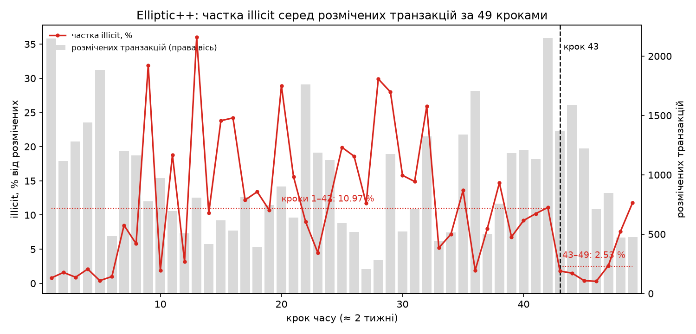
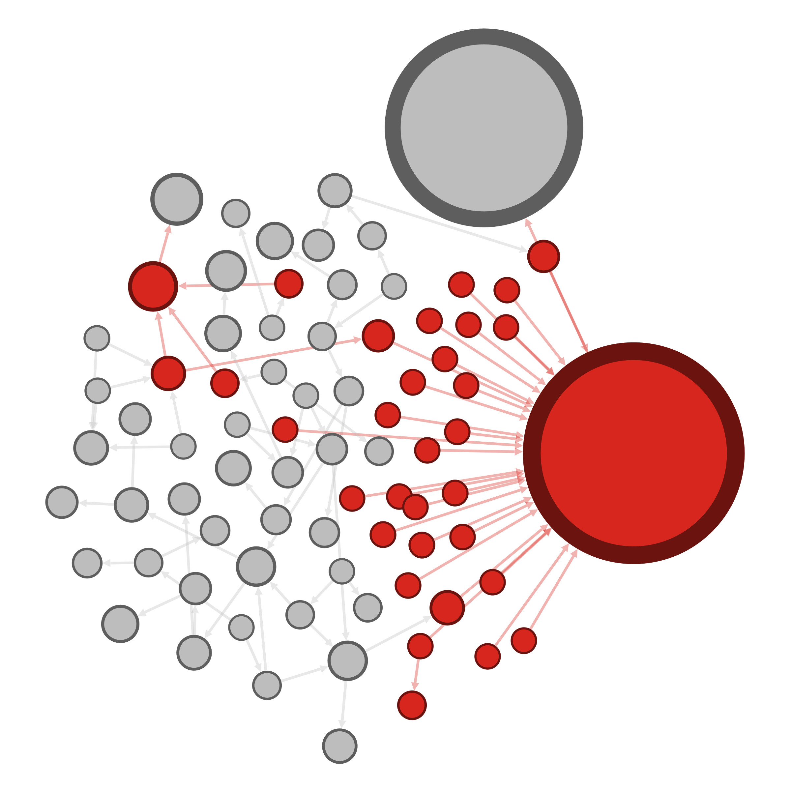

prep.py → 01_import.cypher (≈ 2,5 хв). Підрахунки збігаються з еталоном (знімок — import.png):
| Вузли й ребра | Transaction | Wallet | FLOWS_TO | INPUT | OUTPUT | SENT_TO |
|---|---|---|---|---|---|---|
| У моїй базі | 203 769 | 822 942 | 234 355 | 477 117 | 837 124 | 2 775 637 |

| Кроки | illicit | розмічених | частка illicit |
|---|---|---|---|
| 1–42 | 4 376 | 39 877 | 10,97 % |
| 43–49 | 169 | 6 687 | 2,53 % |
Частки пораховано через суми illicit / labelled, а не як середнє відсотків. До кроку 42 частка стрибає від 0,4 до 36 %, а з кроку 43 падає до 0,3–1,8 % на кроках 43–46 і лише на 48–49 повертається до 7,6–11,8 %. Альтернативне пояснення, крім «злочинців стало менше»: близько кроку 43 закрився великий darknet-ринок (так пояснюють провал моделей після 43 автори оригінального Elliptic, Weber et al., 2019). Злочинна активність переходить на нові адреси й сервіси, які ще ніхто не атрибутував. Тобто падає покриття розмітки, а не злочинність: мітки — це «що відомо слідству», а не «що відбувалося».
Перцентилі кількості відправників: p99 = 46, p99.9 = 103, max = 11 213. Поріг 103 (p99.9) — «хвіст» розподілу, а не число «на око». Його перевищують 833 гаманці:
| Клас | гаманців ≥ 103 відправників | частка | базова частка | lift |
|---|---|---|---|---|
| illicit | 22 | 2,6 % | 1,7 % | 1,5 |
| licit | 453 | 54,4 % | 30,5 % | 1,8 |
| unknown | 358 | 43,0 % | 67,8 % | 0,6 |
Висновок: fan-in сам по собі не є ознакою злочинної активності: серед «консолідаторів» licit-гаманців у 20 разів більше, ніж illicit, а lift у licit вищий. Це насамперед біржі, платіжні сервіси й пули, і без другого сигналу fan-in дає хибні спрацювання.
| Поріг «відщепу» outMin / outMax | < 0,1 | < 0,05 | < 0,01 (додатково) |
|---|---|---|---|
| illicit-транзакцій, з яких починається ланцюжок із 5 переходів | 366 | 357 | 189 |
Висновок: зміна порогу з 0,1 на 0,05 прибрала лише 9 стартів (−2,5 %). Отже, у знайдених ланцюжках «відщеп» майже завжди менший за 5 % від решти: дрібна виплата і велика решта на нову адресу, крок за кроком. Форма різка й стабільна до порогу. Лише при порозі 0,01 лишається 189 стартів: приблизно в половини ланцюжків усі п'ять відщепів менші за 1 %, а в решти хоча б один лежить між 1 і 5 %.
| unknown-гаманець | exposure (illicit за 1–2 кроки) | прямі відправники |
|---|---|---|
18sJPXgoWoL3Z1pcM22QvWwyyFVhwxrXE9 | 1 061 | 1: 1FvtWwP3… (illicit, сам має 1 060 illicit-відправників) |
1781T3nnX2ncqTHYbRcac1R58VR1mFvmqt | 1 061 | той самий 1 відправник 1FvtWwP3… |
3BBio7imFnNJ2cJEMoArJ1QcBzS4NmvAfr | 319 | 33, з них 1 illicit (3MnQyozU…, за ним 318 illicit) |
Висновок: рекордна експозиція 1 061 складається з 1 прямого illicit-відправника плюс 1 060 його власних illicit-відправників. Вона «успадкована» через одне ребро з вагою n = 1, тому це слабкий сигнал: адреса могла отримати одну виплату від консолідатора, нічого не знаючи про його джерела. Те саме з третьою адресою. Висока експозиція значуща, лише коли її дають багато незалежних шляхів.
Весь 03_gds.cypher (≈ 35 с): WCC — 2 компоненти (822 935 + 7); Louvain — 385 спільнот, Q = 0,928; Leiden — 435, Q = 0,926. У самоперевірці курсу вказано ≈ 410–450 спільнот, а в мене 385: Louvain недетермінований, модулярність збігається. Базова частка illicit серед гаманців — 1,73 %.
| # | community | size | illicit | licit | illicitPct | lift |
|---|---|---|---|---|---|---|
| 1 | 476429 | 78 | 33 | 0 | 42,3 % | 24,4 |
| 2 | 744291 | 5 643 | 1 357 | 803 | 24,0 % | 13,9 |
| 3 | 131194 | 3 161 | 715 | 1 078 | 22,6 % | 13,0 |
| 4 | 370507 | 2 405 | 519 | 523 | 21,6 % | 12,4 |
| 5 | 206855 | 84 | 18 | 23 | 21,4 % | 12,4 |
У цьому запуску перше місце посіла мала спільнота (78 гаманців, усі активні лише на кроці 15). У довідковому запуску максимум був 28,2 % / lift 16,3. Кандидати в ліди — unknown із найвищим PageRank у спільноті 476429:
| lead | pagerank | senders | receivers | крок |
|---|---|---|---|---|
1PMBzVZqD7uqsDr8LQKXFyXb7eggRUUfP9 | 3,83 | 1 | 0 | 15 |
19L3MtGJ16GXBF8gJmsLYz76KTjPPm6Jnk | 0,71 | 1 | 0 | 15 |
17t2NY43e8ziZa2Ra8NbNfimij3sYuLMiv | 0,48 | 1 | 0 | 15 |
Обираю 1PMBzVZq…: його PageRank уп'ятеро вищий за наступного, і саме він отримав від хаба спільноти 1FHFZAyf… увесь зібраний баланс (див. завдання 4 і 5). Окремо помітно, що серед лідів з найвищим PageRank у 03_gds.cypher (запит 8) перше місце посідає 1781T3nn… із завдання 2.3 (PR 144,7). Його PageRank так само успадкований від хаба 1FvtWwP3….

Кольори й розмір: колір — Partition за class (червоний — illicit, сірий — unknown; licit у спільноті немає), розмір — Ranking за pagerank. Найбільший червоний вузол — хаб 1FHFZAyf…, найбільший сірий — лід 1PMBzVZq…. Розташування illicit: вони не розкидані по спільноті. Майже всі утворюють окреме скупчення-«зірку», що сходиться в хаб, а unknown-гаманці лежать окремо, ланцюжками переказів.
Спільноту вивантажено блоком B з 04_export.cypher (78 вузлів, 82 ребра). Gephi GUI не встановлено, тому ті самі кроки виконано в Gephi Toolkit 0.11.4 (tools/GephiCommunity.java): ForceAtlas2 з Approximate Repulsion (Barnes-Hut), далі Prevent Overlap (adjustSizes), Partition за class, Ranking за pagerank, Preview → PNG/SVG, Save project → community.gephi.
Лід: 1PMBzVZqD7uqsDr8LQKXFyXb7eggRUUfP9 (unknown). Це найвищий PageRank серед unknown у спільноті Louvain 476429, першій у топ-5: 78 гаманців, 42,3 % illicit, lift 24,4, жодного licit.
Сигнал А — сусідство за мітками. У ліда один відправник — illicit-гаманець 1FHFZAyf…. На кроці 15 у нього зайшли кошти від 29 гаманців, і всі 29 мають мітку illicit.
Сигнал Б — форма транзакції, без міток. Лід отримав увесь вихід транзакції 246979279: 29 вхідних потоків, 1 вихід 14,989 BTC, без решти. Це консолідація з повним «sweep» на нову адресу, після якого кошти в межах датасету не рухаються. Серед 171 гаманця, що отримували такий sweep (1 вихід, ≥ 20 вхідних потоків), illicit — 12,9 % (lift ≈ 7,5). Сигнал рахується з форми транзакції без жодних міток, тому не випливає з міток чи спільноти.
Спільноту окремим сигналом не рахую: лід має одне ребро, тож членство в ній успадковане від хаба. Leiden кладе лід у спільноту з 5 087 гаманців, де illicit лише 6,8 % (lift ≈ 3,9).
Альтернативи: (1) депозитна адреса біржі чи обмінника, куди злочинець вивів кошти; тоді адреса належить сервісу; (2) холодне зберігання того самого оператора; (3) неповна розмітка: сама транзакція 246979279 має клас unknown, а мітки гаманців в Elliptic++, судячи з даних, виведено з міток транзакцій, тож лід «unknown» за побудовою; (4) хибна мітка хаба: якщо 1FHFZAyf… — сервіс, сигнал А зникає.
Упевненість: помірна. Два незалежні сигнали узгоджені, але обидва стосуються одного кластера на одному кроці, а відрізнити «гаманець оператора» від «депозиту біржі» в межах датасету неможливо.
Наступний крок: у block explorer (mempool.space, Blockchair) подивитися, куди й коли пішли 14,989 BTC після кроку 15 і чи з'являється адреса у спільних входах з іншими. Далі — відкриті атрибуції: WalletExplorer/OXT (чи адреса в кластері відомого сервісу), Chainabuse, OFAC SDN (чи згадуються лід або 1FHFZAyf…).
Жоден unknown-гаманець не бере участі в жодній із 4 545 illicit-транзакцій (запит 5.5). Отже, мітки гаманців в Elliptic++ виведено з міток транзакцій. Тому «unknown» означає «не торкався розміченої illicit-транзакції», а не «перевірений і чистий». Через це сигнал «отримав кошти з illicit-транзакції» для unknown неможливий, і для другого сигналу я взяв форму транзакції.